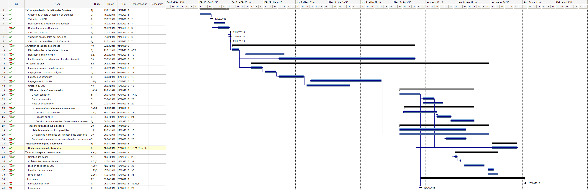

Plannings
Pour nous coordonner dans notre travail et avoir une bonne gestion des délais, nous avons établi dès le début du second semestre, un planning référence que voici qui nous a guidé dans notre travail et notre avancement
Voici le planning prévisionnel :

Voici le planning effectif :

Réunions
Durant notre projet, nous avons eu plusieurs réunions qui nous ont permis à la fois d’avoir des retours sur notre travail, mais aussi de s’accorder sur le travail à effectuer. Nous avons participé à plusieurs types de réunions :
- les réunions entre élèves
- les réunions avec les tutrices
- les réunions avec iUserLab
Difficultés
Au cours de notre projet, nous avons rencontré diverses difficultés.
Les principales difficultés de ce projet nous sont venues de nos doutes concernant nos décisions dans la conception de la base de données. Lorsque nous avions décidé d’un certain modèle, nous avions des doutes sur la pertinence de nos choix. La cardinalité des entités nous a demandé du temps et nous a obligé à consulter plusieurs personnes plus qualifiées dans ce domaine : notre professeur d’informatique, les membres de la start-up iUserLab. Ces personnes nous ont conseillées dans nos choix et nous ont permis d’arriver à un modèle conceptuel plus performant et réduisant les redondances au sein de la base de données.
Les requêtes cachées derrière les différents formulaires que nous avons faits ont nécessité l’intervention de plusieurs personnes. Certains formulaires ont nécessité de faire plusieurs requêtes imbriquées et donc de maîtriser correctement le lien entre le PHP et les requêtes MySQL.
Nous avons également eu du mal à faire des listes déroulantes dynamiques, c’est-à-dire qui proposent automatiquement une sous-liste déroulante dont les items sont différents suivant la sélection dans la première liste déroulante. Nous avons alors pensé à utiliser JavaScript ou Ajax, mais ces deux langages nous étant inconnus, nous avons préféré rester sur du PHP.